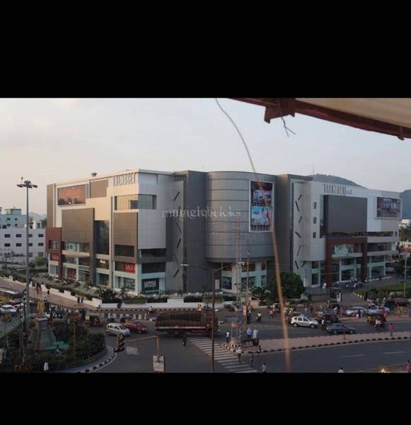
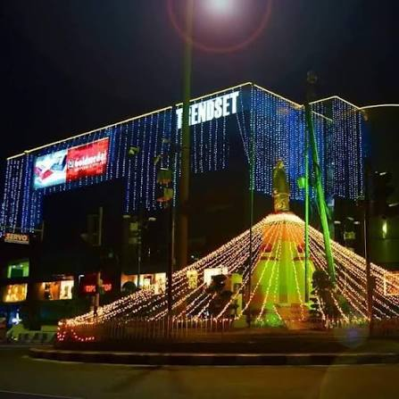

01
Fashion & Style
Browse available fashion, clothing, accessories and lifestyle stores.

06 — SHOPPING · VIJAYAWADA
Explore fashion, discover dining spots and enjoy a relaxed shopping experience in Vijayawada.
Explore Trendset Mall ↓Trendset Mall is a shopping destination in Vijayawada known for its retail, dining and leisure options. It offers a place to explore shops and spend time away from the usual routine.
Whether you're browsing fashion, meeting friends or looking for somewhere to eat, include Trendset Mall in your city itinerary.
Browse available fashion, clothing, accessories and lifestyle stores.
Take a break from shopping and explore available restaurants, cafés and food outlets.
Enjoy a casual outing, browse new finds and spend time with friends or family.

Make an afternoon of exploring stores, finding something new and enjoying a meal with your favourite people. Trendset Mall can be a relaxed stop on a day spent exploring Vijayawada.
Plan your visit ↗Trendset Mall, Benz Circle area, Vijayawada, Andhra Pradesh. Check the exact address and route before travelling.
Check current opening hours before visiting, especially on public holidays.
Check which stores and dining outlets are currently operating before planning your visit.
Opening hours and available facilities may change. Verify current details before travelling.
DISCOVER YOUR CITY